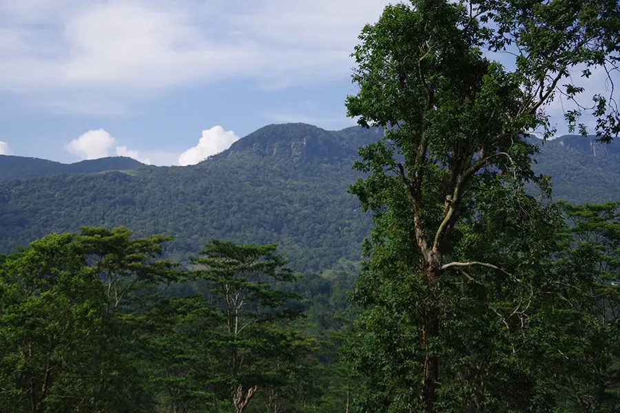

Sinharaja Forest Reserve
Sinharaja is a rainforest and a large area of bio-diversity which is located in the South West low land wetzone of Sri Lanka.It is a 4 and a half hour journey from the airport to the entrance. Due to its hilly area and dense vegetation it is difficult to spot wildlife here unlike national parks.It is the last main rainforestry area in Sri lanka.
About it
This forest spans 21km East to West and 7km from North to South .In this huge area There is also the occasional Leopard and Elephant in the forest.Sinharaja has been estimated to be the most dense rainforest in all of Asia.The average temperature of the forest is around 23.6C(ToursLanka).
Activities to enjoy at Sinharaja rain forest
With Sinharaja being protected by UNESCO,to witness the beauty of this rainforest there are 16 hiking trails available for visitors to enjoy. according to (urlaub-sr-lanka) the most popular hiking trails are:Kudawala-Moulawella trail and Kudawa-Sinhagala trail.It is recommended when Hiking to also have mosquito repellent and walking shoes as leeches are common and could get stuck under the foot.